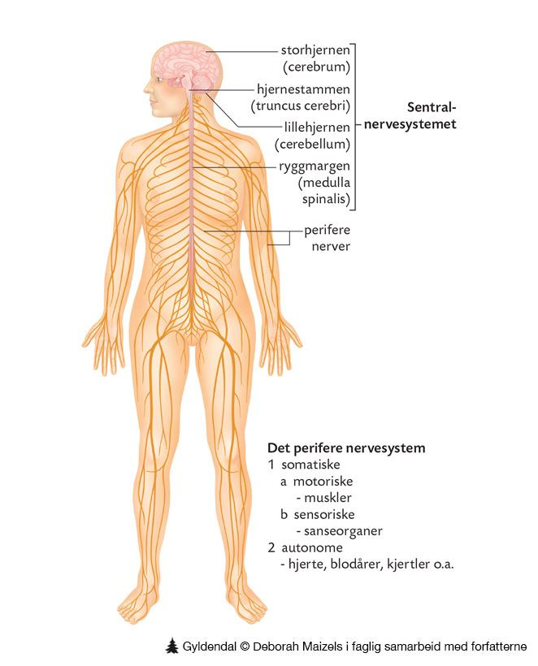

Hormonsystemet
Podcast
Gruppe 7: Peter, Marta og Ole Kristian
Nervesystemet er med i alle bevegelse du gjer i løpet av en dag. Det sørger for at du pustar, at du kan sjå, at du kan høyre, og at du kan kjenne om du fryser eller er varm. Nervesystemet kontrollerer utallige små og store prosesser i kroppen, og det sørger for at du er bevisst og har hukommelse og følelsar.

Bildekjelde